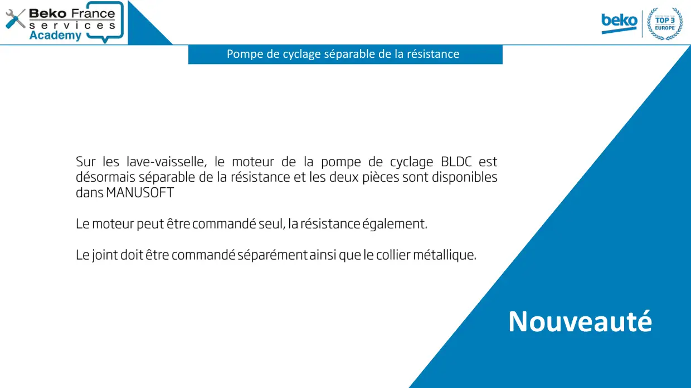
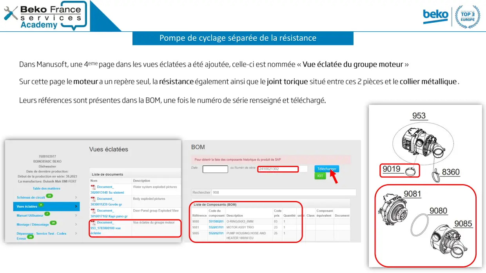
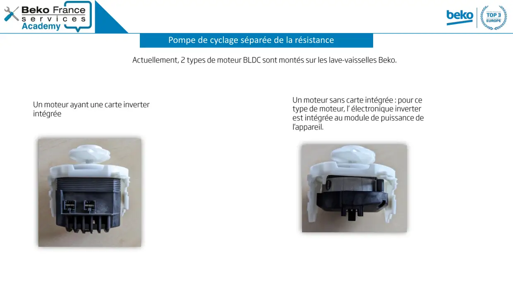
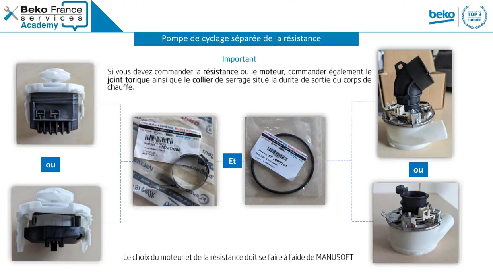

Note Information Lave Vaisselle Pompe de cyclage séparable de la résistance

Sensitivity: Internal / Non-Personal DataPompe de cyclage séparable de la résistanceNouveauté
1 / 4
Sensitivity: Internal / Non-Personal DataPompe de cyclage séparée de la résistance
2 / 4
Sensitivity: Internal / Non-Personal DataPompe de cyclage séparée de la résistance
3 / 4
Sensitivity: Internal / Non-Personal DataouEtPompe de cyclage séparée de la résistanceou
4 / 4